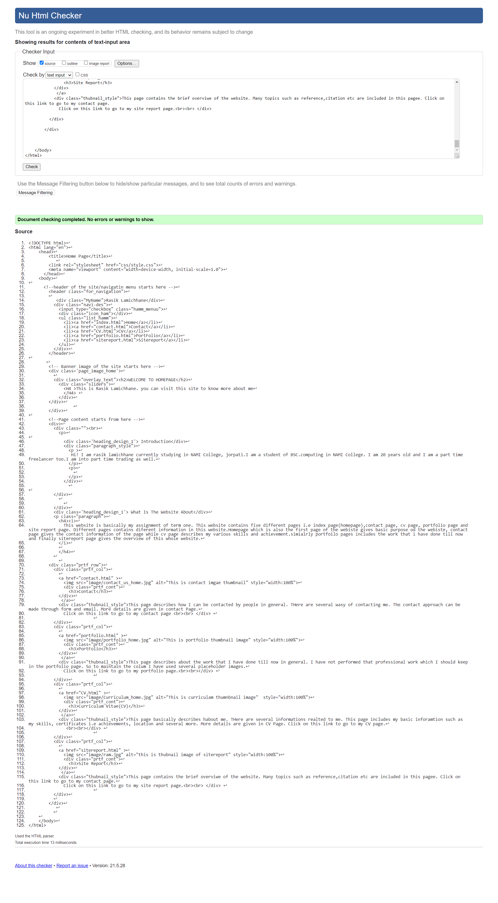
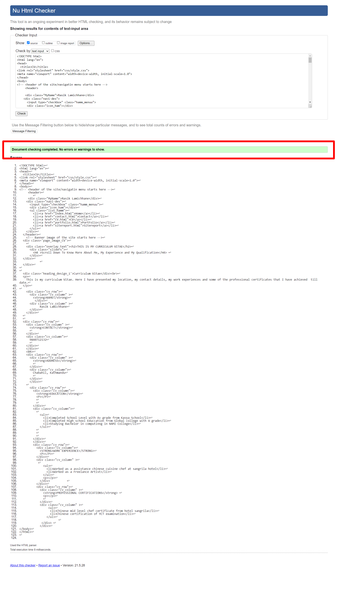
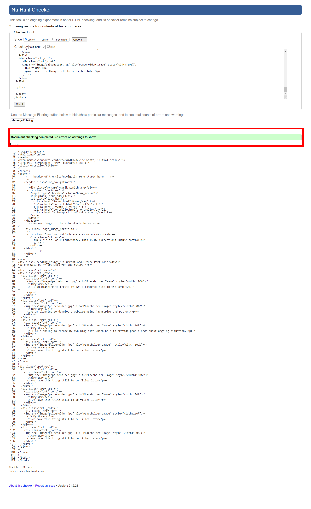
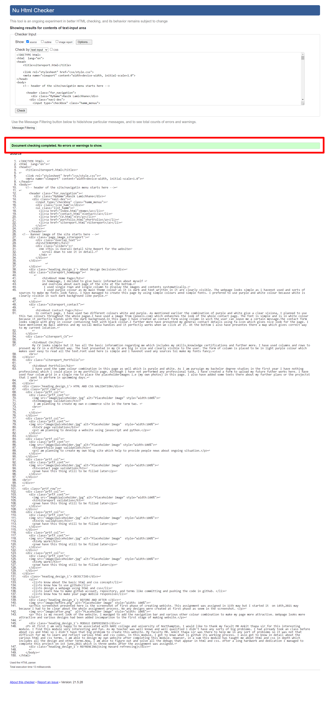
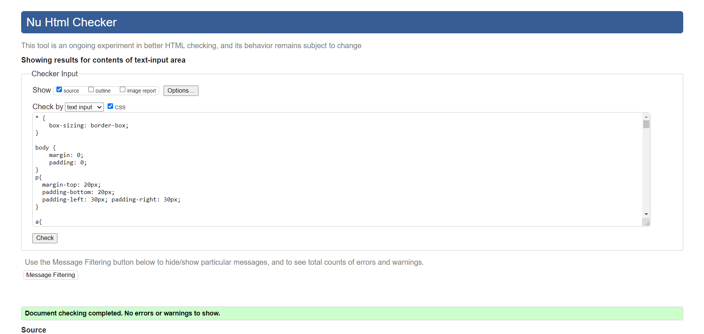

SITEREPORT
This is Overall Detail Site Report for the website
scroll down to see it in detail.
About Design Decision
About Home Page
In homepage, I decided to give basic information about myself
and overview about each page of the site at the bottom.
I used single rown and single column to display the images and contents systematically.
I used purple colour as my main theme colour as it is dark and text written in it are clearly visible. The webpage looks simple as i havenot used and sorts of sources to make my fonts look fancy. I have managed to create this page by using simple colours annd simple fonts. I prefered to use purple and white colour because white is clearly visible in such dark background like purple.
About Contact Page
In contact page, I have used two different colours white and purple. As mentioned earlier the combination of purple and white give a clear vision, I planned to use this two colours throughout the whole pagae.I have used a image from (pexels.com) which enhanches the look of the whole contact page. The font is simple and is in white colour because it perfectly blends with the dark background.In this page I have created an contact form using column in wich the user can leave me a certain message.The contact form looks simple with grey in colour containing text with black colour.I further more have presented my general contact details using fa-icon which gives nice look for the page. I have mentioned my mail address and my social media handles and it perfectly works when we click at it. At the bottom i also have presentes there a map which gives correct way to my current location.
About CV
My CV looks simple but it has all the basic inforamtion regarding me which includes my skills,knowledge certifications and further more. I have used columns and rows to present my CV in a different way. The text presented in my CV are big in size and clearly visible to the user. The form of column is placed to be in light purple colour which makes user easy to read all the text.Font used here is simple and i havenot used any sources toi make my fonts fancy.
About Portfolio
I have used the same colour combination in this page as well which is purple and white. As I am pursuign my bachelor degree studies in the first year I have nothing professional which i could place in my portfolio page. Although I have not performed any professional task, I have created a form to upload my future futher works here. I have used four colum grid in a single row to place the placeholderimages i.e (my own photos) in this page. I also have added some texts there about my further plans or the projectst that I want to perform in upcomming days.
HTML AND CSS VALIDATION

Homepage validation
You need to zoom in to see the validation clearly.

CV page validation
You need to zoom in to see the validation clearly.

portfolio page validation
You need to zoom in to see the validation clearly.

contact page validation
You need to zoom in to see the validation clearly.

Sitereport validation
You need to zoom in to see the validation clearly.

CSS validation
You need to zoom in to see the validation clearly.

we have this thing still to be filled later. I have kept placeholder image here to attach further javascript validation for future.

we have this thing still to be filled later. I have kept placeholder image here to attach further javascript validation for future.
BEFORE AND AFTER
This screenshot presented here is the screenshot of first phase of creating webiste. This assignment was assigned in 11th may but I started it on 14th,2021 may because I had to be clear about the whole assignment process. No any designs were created at first phase as seem in the screenshot.
This is my recent look of the website. I managed to add the navigation bar and various other colour combination to make my page more attractive. Webpage looks more attractive and various designs had been added incomparison to the first stage of making website.
OBJECTIVE
- To know about the basic html and css concept
- To know how to use github
- To design a webpage using html and css
- To learn how to make github account, repository, and terms like committing and pushing the code in github.
- To know how to make your page mobile responsive
MODULE EXPERIENCE
At first I am very happy to be associated with NAMI college and university of Northampton. I would like to thank my facult MR Ankit thapa sir for this interesting module. I find this module very interesting and fun. As my teacher was well known and well qualified i didn't have any sorts of big problems. I had already took an class before about css and html so i didn't have that big problem to create this website. My faculty MR. Ankit thapa sir was there to help me in any sort of problems so it was not that difficult for me to learn and reflect various html and css codes. In this module, I got to knwo what is github its working process. I aslo got to know in detail about the various html and css terms. I am able to design my own website after completing this module. However, in a sum this module has taught me about html and css in depth which includes all the design and other terms.Now, I am able to figure out and solve all the debugs that appear in html and css. After a long hardwork and dedication I managed to complete this project on 1st june,2021 which is three weeks after the assignment was assigned.
REFERENCING(Using Havard refrencing)
- Powell, T., 2021. HTML & CSS: The Complete Reference, Fifth Edition (Complete Reference Series). [online] Dcpehvpm.org. Available at: [Accessed 6 June 2021].
- Font Awesome. 2021. Font Awesome. [ONLINE] Available at: https://fontawesome.com/v5.15/how-to-use/on-the-web/referencing-icons/basic-use. [Accessed 01 June 2021].
- Google Maps Generator. 2021. ▷ Google Maps Generator | Embed Responsive Iframe => 100% Free!. [ONLINE] Available at: https://www.googlemapsgenerator.com/en/. [Accessed 01 June 2021].
- Visual, A., (2021) Photo by aron visuals. [ONLINE]. Available at: https://www.pexels.com/photo/silhouette-of-mountain-with-mist-on-top-1643123/ [Accessed 6 June 2021].
- pexel, L., (2016) Lukas pexel. [ONLINE]. Available at: https://www.pexels.com/photo/two-white-printer-papers-near-macbook-on-brown-surface-590016/ [Accessed 6 June 2021].
- company, P., (2016) Blue click pen. [ONLINE]. Available at: https://www.pexels.com/photo/two-white-printer-papers-near-macbook-on-brown-surface-590016/ [Accessed 6 June 2021].
- bay, P., (2016) Turned on computer monitor. [ONLINE]. Available at: https://www.pexels.com/photo/turned-on-computer-monitor-displaying-text-270360/ [Accessed 6 June 2021].
- sun, D., (2018) Selective Focus Photo of Green Telephone. [ONLINE]. Available at: https://www.pexels.com/photo/selective-focus-photo-of-green-telephone-955081/ [Accessed 6 June 2021].
- Novacek, J., (2018) Time Lapse Photo of Stars on Night. [ONLINE]. Available at: https://www.pexels.com/photo/time-lapse-photo-of-stars-on-night-924824/ [Accessed 6 June 2021].
- Pasaric, A., (2018) Dark Starry Sky. [ONLINE]. Available at: https://www.pexels.com/photo/dark-starry-sky-1694000/ [Accessed 6 June 2021].
- peteza, L., (2020) Photo of Stars and Galaxy. [ONLINE]. Available at: https://www.pexels.com/photo/photo-of-stars-and-galaxy-3772378/ [Accessed 6 June 2021].